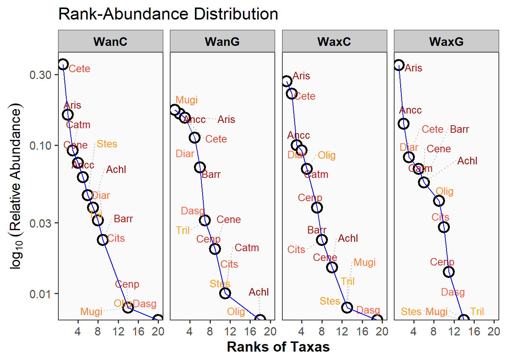

————————————————————————
Diversidad Alfa
- Diversidad alfa. Hay otro html en donde se encuentra esta información.
————————————————————————
Resumen
El presente reporte corresponde a los últimos ajustes requeridos para someter el manuscrito a la revista indicada. Ajustes realizados:
- Generales: Con las cuatro semanas definitivas y relacionadas a las cuatro fases lunares del ejercicio, se realizará todo el procedimiento de diversidad alfa, modelos mixtos y técnicas de ordenación multivariada.
- Exploratorios gráficos: Figuras de relaciones (elipses, cajas y burbujas).
- Diversidad alfa: Curvas RAD, Diversidad en 4 pasos.
- Modelos mixtos: Figuras GAM y de áreas con columnas, para abundancias y biomasas.
- Técnicas de ordenación multivariada. NMDS y RDA, con abundancias x especies y gremios, biomasas x gremios. Se genera un Ándice multivariado, que integra la abundancia total, los promedios de longitudes y pesos, para visualizarlo en NMDS y RDA.
Cargar bases de datos
Se cargan las librerÁas requeridas para el procesamiento de los datos.
Datos biológicos
Se carga la base de datos con las especies de peces.
| Especies | Abreviaturas |
|---|---|
| Achirus lineatus | Achl |
| Anchovia clupeoides | Ancc |
| Ariopsis sp | Aris |
| Bardiela ronchus | Barr |
| Caranx crysos | Carc |
| Cathorops mapale | Catm |
| Centropomus ensiferus | Cene |
| Centropomus pectinatus | Cenp |
| Centropomus undecimalis | Cenu |
| Cetengraulis edentulus | Cete |
| Chaetodipterus fabel | Chaf |
| Citharichthys spilopterus | Cits |
| Dasyatis guttata | Dasg |
| Diapterus rhombeus | Diar |
| Eugerres plumieri | Eugp |
| Gerres cinereus | Gerc |
| Gobiomorus dormitor | Gobd |
| Lutjanus analis | Luta |
| Lutjanus jocu | Lutj |
| Lycengraulis grossidens | Lycg |
| Menticirrhus americanus | Mena |
| Mugil incilis | Mugi |
| Oligoplites saliens | Olig |
| Oligoplites saurus | Olig.1 |
| Selene vomer | Selv |
| Sphoeroides testudineum | Spht |
| Stellifer sp | Stes |
| Strongylura timuco | Strt |
| Trichiurus lepturus | Tril |
1. Figuras de Cajas
Se analizan los patrones de abundancias de peces (eje y), con diferentes factores (eje x), como las fases lunares (Moon), horarios (Time), y zonas (Zones).
2. Curvas RAD (Fases lunares, Horarios dÁa-noche)
a. RAD por fases lunares (Moon)
Patrón de distribución de abundancias para las 15 especies más abundantes (para no saturar las figuras). WanC y WanG, muestran la mayor presencia de especies abundantes o dominantes.

Las curvas RAD por cada fase lunar muestran los siguientes patrones:
- WaxC (Waxing crescent) 🌒. La curva es más pendiente que el resto, lo cual muestra un patrón con pocas especies que son las dominantes (ver taxones de la parte superios como aris, Cete y Ancc). En el siguiente análisis de ajuste de estas curvas, se demostrará que el modelo relacionado es el Zipf.
- Wax.gib (Waxing gobbous) 🌔. Que no hay un patrón definido en la estructura de las abundancias (de dominancia o de equidad en las abundancias de las especies), por lo cual en el siguiente análisis, el ajuste será más asociado a un modelo nulo.
- Wan.gib (Waning gibbous) 🌖. Hay una dominancia jerárquica con una estructura fractal. En el siguiente análisis el el ajuste de esta curva es a un modelo Mandelbrot.
- WaxG (Waxing gibbous) 🌘. Hay un patrón uniforme en la distribución de las abundancias para los diferentes taxones (curva menos pendiente), con lo cual se espera una mayor diversidad de peces y uniformidad para esta fase lunar. En el siguiente análisis el ajuste de esta curva es a un modelo lognormal.
b. RAD por horarios del dÁa (Time)
Patrón de distribución de abundancias para las 15 especies más abundantes (para no saturar las figuras). En la noche se presenta el mayor número de especies abundantes o dominantes.
Patrón de distribución de abundancias para las 15 especies más abundantes (para no saturar las figuras). En la zona 3 se presenta el mayor número de especies abundantes o dominantes, seguida de las zonas 2 y 1 respectivamente.
3. Diversidad alfa - propuesta de Chao et al. (2020)
a. Por fases lunares (Moon)
Patrón general de diversidad por cada fase lunar. WanC y Wang.gibb presentan la mayoa abundancia y riqueza de especies, asà como la mayor cantidad de singletons o especies con un individuo (f1) y de doubletons o especies con dos individuos (f2), esta cantidad de singletons afectará considerablemente a su perfil de completitud y el perfil asintótico que se muestran a continuación.
| Moon | N | Richness | f1 | f2 |
|---|---|---|---|---|
| WanC | 131 | 19 | 6 | 2 |
| WanG | 98 | 17 | 7 | 2 |
| WaxC | 130 | 18 | 6 | 3 |
| WaxG | 72 | 13 | 3 | 1 |
Paso 1. Perfil de completitud
El perfil de completitud, para los casos que sea <0.9 indica que la muestra no es completa. Se observa que para la riqueza de especies (q=0) todas las fases lunares son incompleta (<0.9), lo cual indica que puede requerirse un mayor esfuerzo de muestreo o que se pueden encontrar más taxones. Los taxones abundantes (q=1) y muy abundantes (q=2) fueron registrados en su totalidad (>0.9).
| Moon | q = 0 | q = 1 | q = 2 |
|---|---|---|---|
| WanC | 0.68 | 0.95 | 1 |
| WanG | 0.58 | 0.93 | 1 |
| WaxC | 0.75 | 0.95 | 1 |
| WaxG | 0.75 | 0.96 | 1 |
Paso 2. Perfil asintótico
El perfil asintótico muestra que en las fases lunares WanC y WanG, se presenta el mayor número de especies sin detectar (8 especies), seguidas de WaxC con 6 especies no detectadas. Este patrón puede afectar para que no se encuentre la asintota de diversidad, en la figura que se presenta a continuación.
| Moon | Estimator | Ob.D | Est.D | Undet. |
|---|---|---|---|---|
| WanC | q = 0 | 19 | 28 | 9 |
| WanC | q = 1 | 9 | 10 | 1 |
| WanC | q = 2 | 6 | 6 | 0 |
| WanG | q = 0 | 17 | 29 | 12 |
| WanG | q = 1 | 10 | 12 | 2 |
| WanG | q = 2 | 8 | 9 | 1 |
| WaxC | q = 0 | 18 | 24 | 6 |
| WaxC | q = 1 | 9 | 10 | 1 |
| WaxC | q = 2 | 6 | 7 | 0 |
| WaxG | q = 0 | 13 | 17 | 4 |
| WaxG | q = 1 | 8 | 10 | 1 |
| WaxG | q = 2 | 6 | 6 | 0 |
La siguiente figura complementa el patrón asintótico de la tabla anterior, en el que se observa que ninguna de las fases lunares se estabiliza en q = 0 (total de especies), ni siquiera interpolando al doble de la abundancia registrada (lÁneas punteadas, no se estabilizan o no se vuelven asintóticas para la diversidad esperada). Esto se debe al lto número de especies con un solo individuo encontradas (f1).
Paso 3. Perfil no asintótico
La siguiente tabla muestra el patrón no asintótico, en el que se extrae una submuestra de cada fase lunar y para este caso la cobertura calculada es del 97%, para lo cual se espera encontrar mayor número de taxones en Wan.cres, seguida de WanG, WaxC y WaxG respectivamente. Este patrón presenta validez, debido a la falta de asintota en el paso anterior.
| Cmax = 0.96 | q = 0 | q = 1 | q = 2 |
|---|---|---|---|
| WanC | 20.10 | 9.46 | 5.79 |
| WanG | 22.31 | 10.92 | 8.32 |
| WaxC | 18.76 | 9.36 | 6.53 |
| WaxG | 13.14 | 8.48 | 5.87 |
El siguiente perfil complementa a la tabla anterior, para lo cual, todas las curvas presentan una cobertura > 0.9 o cercana a uno en el eje x, para que sus patrones de diversidad sean comparables.
Paso 4. Patrón de uniformidad
Para este caso se observa que la mayor uniformidad de Pielou (J) se presenta en WaxG que representa a la estación con menor número de tazones (q=0) y menos nùmero de singletons (f1).
| Cmax = 0.96 | Pielou J' | q = 1 | q = 2 |
|---|---|---|---|
| WanC | 0.75 | 0.44 | 0.25 |
| WanG | 0.77 | 0.47 | 0.34 |
| WaxC | 0.76 | 0.47 | 0.31 |
| WaxG | 0.83 | 0.62 | 0.40 |
b. Por Horarios (Times)
Patrón general de diversidad por horario del dÁa. En la noche se presenta la mayor abundancia y riqueza de especies, asà como la mayor cantidad de singletons o especies con un individuo (f1) y de doubletons o especies con dos individuos (f2), esta cantidad de singletons afectará considerablemente a su perfil de completitud y el perfil asintótico que se muestran a continuación.
| Solar_day | N | Richness | f1 | f2 |
|---|---|---|---|---|
| Day | 69 | 16 | 5 | 3 |
| Night | 362 | 26 | 12 | 0 |
Paso 1. Perfil de completitud
El perfil de completitud, para los casos que sea <0.9 indica que la muestra no es completa. Se observa que para la riqueza de especies (q=0) los horarios dÁa y noche son inncompletos (<0.9), lo cual indica que puede requerirse un mayor esfuerzo de muestreo o que se pueden encontrar más taxones, especialmente en la noche. Los taxones abundantes (q=1) y muy abundantes (q=2) fueron registrados en su totalidad (>0.9).
| Solar_day | q = 0 | q = 1 | q = 2 |
|---|---|---|---|
| Day | 0.80 | 0.93 | 0.99 |
| Night | 0.28 | 0.97 | 1.00 |
Paso 2. Perfil asintótico
El perfil asintótico muestra que en la noche se presenta el mayor número de especies sin detectar (28 especies no detectadas), seguida del dÁa con solo 4 especies no detectadas. Este patrón puede afectar para que no se encuentre la asintota de diversidad, en la figura que se presenta a continuación.
| Solar_day | Estimator | Ob.D | Est.D | Undet. |
|---|---|---|---|---|
| Day | q = 0 | 16 | 20 | 4 |
| Day | q = 1 | 11 | 13 | 2 |
| Day | q = 2 | 9 | 10 | 1 |
| Night | q = 0 | 26 | 92 | 66 |
| Night | q = 1 | 11 | 12 | 1 |
| Night | q = 2 | 7 | 7 | 0 |
La siguiente figura complementa el patrón asintótico de la tabla anterior, en el que se observa que ninguno de los horarios dÁa-noche se estabilizan en q = 0 (total de especies), ni siquiera interpolando al doble de la abundancia registrada (lÁneas punteadas, no se estabilizan o no se vuelven asintóticas para la diversidad esperada). Esto se debe al lto número de especies con un solo individuo encontradas (f1).

Paso 3. Perfil no asintótico
La siguiente tabla muestra el patrón no asintótico, en el que se extrae una submuestra de cada horario dÁa-noche y para este caso la cobertura calculada es del 98%, para lo cual se espera encontrar mayor número de taxones en la noche (42 especies), seguida de la mañana (22 especies). Este patrón presenta validez, debido a la falta de asintota en el paso anterior.
| Cmax = 0.972 | q = 0 | q = 1 | q = 2 |
|---|---|---|---|
| Day | 18.51 | 12.18 | 9.49 |
| Night | 36.97 | 11.04 | 7.26 |
El siguiente perfil complementa a la tabla anterior, para lo cual, todas las curvas presentan una cobertura > 0.9 o cercana a uno en el eje x, para que sus patrones de diversidad sean comparables.
Paso 4. Patrón de uniformidad
Para este caso se observa que la mayor uniformidad de Pielou (J) se presenta en la mañana que representa a la estación con menor número de tazones (q=0) y de especies con un solo individuo (f1).
| Cmax = 0.972 | Pielou J' | q = 1 | q = 2 |
|---|---|---|---|
| Day | 0.86 | 0.64 | 0.48 |
| Night | 0.67 | 0.28 | 0.17 |
2. Figura de áreas para gremios tróficos
2.1 Abundancias de gremios por fases lunares - Opción con barras discretas.
Esta opción (Figure 1) es más cercana a la realidad de los datos, que la siguiente figura con área continua por interpolación. Se observa que en WaxG, el aumento de los omnivoros, coincide con la disminución en la abundancia total de los peces.
*Nota: Esta figura no coincide con la de abundancias absolutas siguiente (Figure 2).
Esta figura (Figure 2) se diferencia de la anterior porque se realiza con abundancias absolutas de la base de abundancias por gremios funcionales “functional†del archivo “datos25.1.xlsxâ€.
Esta ?@fig-fig6 a diferencia de la siguiente, se extrae de ta tabla general “data1†en el archivo datos25.1.xlsx de Excel, pero los resultados son iguales a Figure 4.
Esta ?@fig-fig7, a diferencia de la anterior se extrae de la hoja “functional2†en el archivo de Excel, pero los resultados son iguales a los de ?@fig-fig6..

————————————————————————
NMDS - Con abudancias
- Técnicas de ordenación. (NMDS con datos de abundancia por especies)
————————————————————————
Se utilizará la distancia Bray Curtis, para la asociación de los datos. Se ejecutan las librerÁas necesarias para este análisis.
Se utiliza la distancia Bray Curtis y el estrés generado es de 0 (0%), debido a que hay pocos datos, solo 4 filas representadas por las 4 fases lunares.
A continuación se extraen las coordenadas de las Moon, Species y variables ambientales, para ser ordenadas con la librerÁa ggplo2.
Con el comando envfit del paquete vegan, se obtienen los siguientes valores de cada variable amiental, mostrando que ninguna presenta un efecto significativo en la ordenación de las especies de peces (valor p > 0.05), sin embargo se realizará la visualización de este análisis, porque para mi concepto, muestra un mejor gradiente que el encontrado en el RDA anterior.
NMDS1 NMDS2 r2 Pr(>r)
pH 0.07797 0.99696 0.0913 0.9583
%OD 0.71617 -0.69792 0.7750 0.5000
OD 0.89933 0.43726 0.5428 0.7500
Conduct -0.62765 -0.77849 0.6016 0.5833
TDS -0.45241 -0.89181 0.8436 0.5000
UPS -0.55719 -0.83039 0.8049 0.5000
Temp -0.52281 -0.85245 0.8988 0.3333
Permutation: free
Number of permutations: 23La Figure 7 genera un gradiente unimodal interesante, de las especies y las fases lunares, mostrando al igual que en el RDA, que las fases WaxC y Wax.gib, son las que agrupan mayor número de especies.
La Figure 8, genera un gradiente unimodal interesante, de las especies, con las variables ambientales y las fases lunares, mostrando al igual que en el RDA, que las fases WaxC y Wax.gib, son las que agrupan mayor número de especies y se relacionan a mayores valores de pH. es
La Figure 9 complementa a la Figure 8, al incorporar las variables ambientales en la caracterización de las Moon y de las especies.